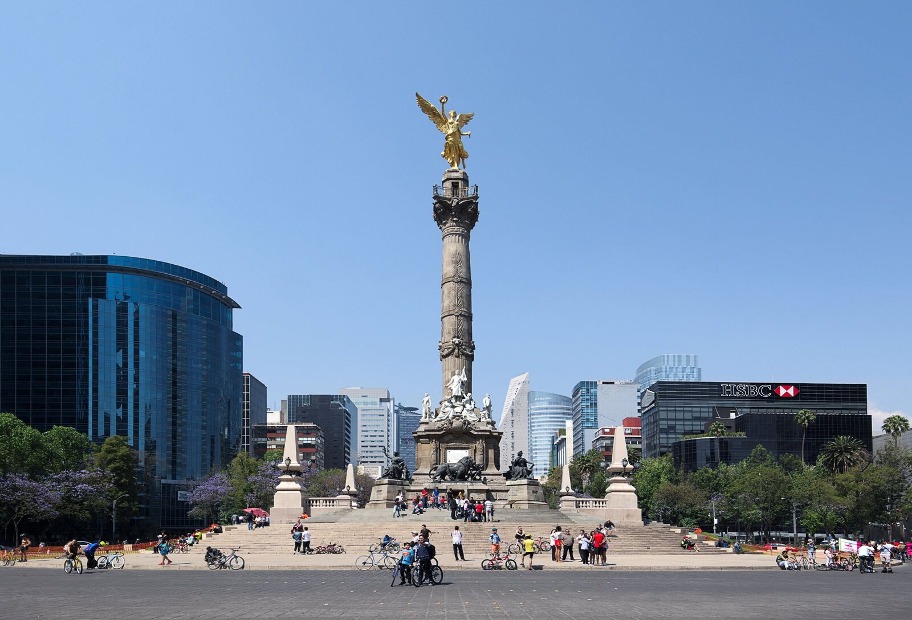

CDMX · 25 al 28 de noviembre de 2026
Viaje a la CDMX para The Hayley Williams Show
Vuelos, hospedaje y concierto en un solo lugar, para Baldemar Aguirre Fraire y María del Coral Fraire Huacuja.
Foto: el Ángel de la Independencia, cerca de la parada del Viva Bus y del hotel
Viva Aerobus · Reservación CIUQKH
Check-in de ida listo; falta el del regreso.
Pases de abordar en la app de Viva.
| Vuelo | Fecha | Sale | Llega | Asientos | Check-in |
|---|---|---|---|---|---|
| VB 9395 Ida | Mié 25 nov 2026 | 2:50 PM Saltillo (SLW) | 4:28 PM AIFA | Baldemar 30C pasillo María del Coral 21F ventana | Completado |
| VB 9394 Regreso | Sáb 28 nov 2026 | 12:45 PM AIFA | 2:13 PM Saltillo (SLW) | Sin seleccionar | Pendiente |
Tarifa Switch
- Equipaje de mano 10 kg
- Hasta 3 cambios gratis
- Seguro de viaje y protección por imprevistos
Viva Bus pagado, ida y vuelta
Para los dos: AIFA → Ángel y Ángel → AIFA. En la taquilla GHO/Autovías de la Terminal Terrestre del AIFA, mostrar la confirmación CIUQKH en el celular (impresa cuesta $30).
- Mié 25: el de 17:30 (respaldo 19:00)
- Sáb 28: salir del Ángel en el de 8:30 AM
Datos
- Reservación CIUQKH
- Doters #7480185964
Kolben Nuoma · Río Ebro 28, Col. Cuauhtémoc
Tres noches en la Cuauhtémoc, confirmadas.
Confirmado
- Habitación 2 adultos
- Ponska
- Fechas 3 noches
- 25 al 28 nov
- Check-in En persona, con entrega de llave
- 16:00
- Check-out
- 12:00
- Reservación
- 2825231299073
- Total Cobro automático a la tarjeta unos 3 días antes de llegar
- MXN 4,153.86
Jueves 26 nov 2026 · 7:00 PM
The Hayley Williams Show en el Auditorio Nacional.
Comprado
- Lugar Paseo de la Reforma 50, CDMX
- Auditorio Nacional
- Apertura de puertas
- 5:00 PM
- Telonera
- Annie DiRusso
- Boletos Móviles; el de María del Coral ya transferido y aceptado en su cuenta de Ticketmaster
- 2
- Ubicación Secciones distintas, no juntos
- Piso 2
- Orden Ticketmaster
- 34-31567/MX2
- Orden Ticketmaster
- 34-31583/MX2
Asientos separados
Los dos boletos están en Piso 2 pero en secciones distintas. Acuerden un punto de encuentro antes y después del show.
Qué no llevar
Prohibido: cámaras, palos de selfie, comida, banderas y letreros. Las mochilas se guardan gratis frente a la Puerta 1.
Concierto el jueves, día libre el viernes y regreso el sábado.
-
Mié 25
- Salir de casa por cuenta propia
- Vuelo VB 9395, 2:50 PM SLW → AIFA 4:28 PM
- Viva Bus de 17:30 AIFA → Ángel de la Independencia (respaldo 19:00)
- Check-in en Kolben Nuoma, con entrega de llave
-
Cena · antes de 21:00
Cena: Santo Pozole MX$100–200 p/p 4.4–4.5 ★
Río Pánuco 214, Col. Cuauhtémoc, a pocas cuadras del Kolben Nuoma (se puede ir caminando). Cenaduría económica: pozole, enchiladas, pambazos y antojitos.
Miércoles 07:00 a 21:00: llegar antes de las 21:00. Sin reservación; se pide en mostrador. Tel. +52 55 2718 3308.
-
Jue 26 · 10:15
Museo de Arte Moderno MX$95 1.5 a 2 h
Paseo de la Reforma y Gandhi. Martes a domingo 10:15 a 17:45. Entrada gratis con INAPAM. Incluye el jardín de esculturas.
-
12:15
Complejo Cultural Los Pinos Entrada libre 1.5 h
Martes a domingo 11:00 a 18:00. Unos 15 min en auto o 30 caminando por el bosque.
-
14:00
Tótem canadiense 15 a 20 min
A unos 400 m de Los Pinos, Calzada del Rey, detrás de la Puerta Quebradora.
-
15:00
Comida tardía en Sushi Itto Parque Aztlán
Av. de los Compositores s/n, Aztlán Parque Urbano (2a sección del Bosque de Chapultepec). Tel. 55 9136 9178. Cierra alrededor de las 7:50 PM.
-
17:30
DiDi al Auditorio Nacional: unos 3 km, 10 a 20 min según el tráfico. Puertas abren a las 5:00 PM. -
19:00
The Hayley Williams Show, Auditorio Nacional
Acordar un punto de encuentro: los lugares están en secciones distintas.
Concierto
-
Vie 27 · 9:30
Zócalo y Catedral Metropolitana Entrada libre 1 h
Unos 20 a 25 min en DiDi o Metro desde la Col. Cuauhtémoc. Calcula como una hora con la plaza. Por ahora no hay recorridos a los campanarios.
-
10:45
Caminata por Av. Madero hacia Bellas Artes: calle peatonal, unos 15 min. -
11:00
Museo del Palacio de Bellas Artes MX$95 1.5 h
Martes a domingo 10:00 a 18:00. Boletos solo en taquilla; gratis con INAPAM o credencial de estudiante o docente. Visitas guiadas gratis a las 12:00 (historia y arquitectura) y 12:30 (murales).
-
12:45
Café en Finca Don Porfirio 30 a 40 min
Piso 8 de Sears, Av. Juárez 14, justo enfrente. Abre 11:00 a 20:00. Hay menos fila antes de media tarde; barra con vista a Bellas Artes.
-
13:45
Tiempo libre: Alameda Central y comida. Caminar hacia el poniente por Av. Juárez. -
16:30
Mirador del Monumento a la Revolución MX$160 en línea · MX$170 en taquilla 1 h
Unos 20 min a pie desde la Alameda. Los viernes abre 12:00 a 22:00. Elevador panorámico al mirador 360°. El atardecer es alrededor de las 6 PM.
-
19:00
Cena cerca del Ángel 10 min en DiDi
- Recomendado La Casa de Toño Zona Rosa, Londres 144. Pozole clásico, quesadillas y el flan de la abuela. Barato, rápido y abierto las 24 horas.
- Alternativa: Wok'ando, Versalles 15, Col. Juárez. Cocina mexicana-asiática, como MX$375 por persona.
Después de cenar, unos 10 min a pie al Kolben Nuoma en Río Ebro.
-
Sáb 28
- Check-out temprano (límite 12:00)
- Viva Bus de 8:30 AM, Ángel → AIFA
- Vuelo VB 9394 AIFA 12:45 PM → SLW 2:13 PM
Bus 8:30 AM
Solo queda una cosa antes de viajar.
- Check-in del regreso (VB 9394) Sáb 28, en la app de VivaHacer ahoraReservación CIUQKH
- Check-in de ida (VB 9395)30C y 21F
- Kolben Nuoma confirmado11 nov
- Boleto de María del Coral transferidoAceptado en Ticketmaster
- Viva Bus pagadoIda y vuelta, los dos